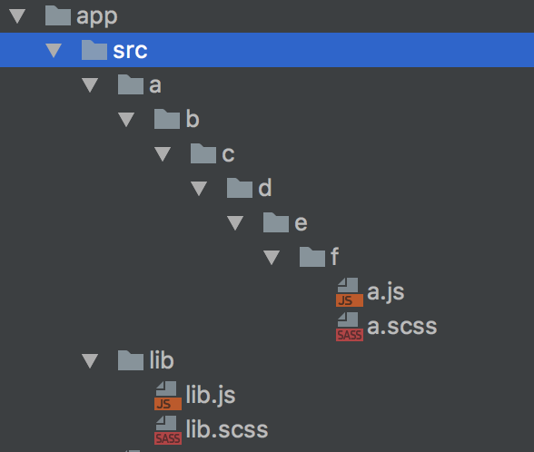
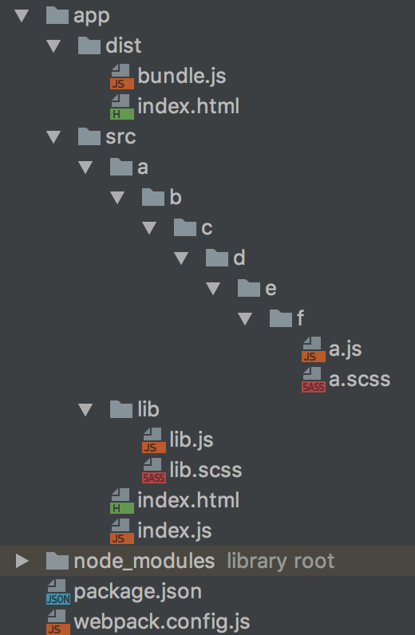
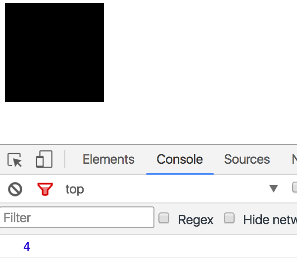
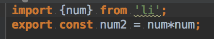
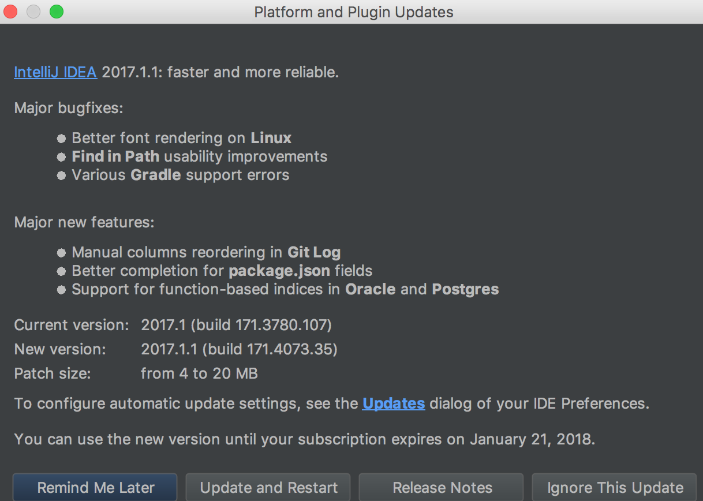
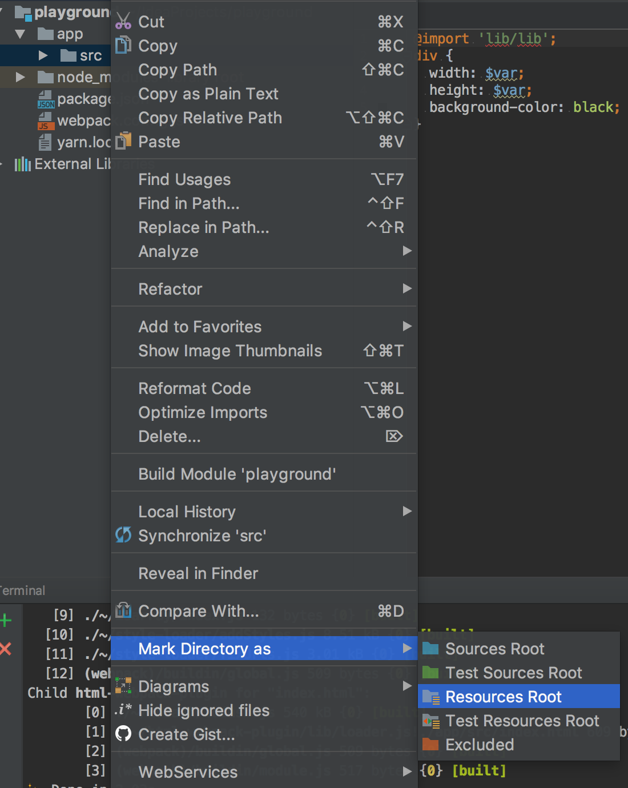
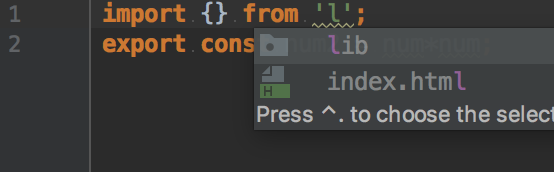
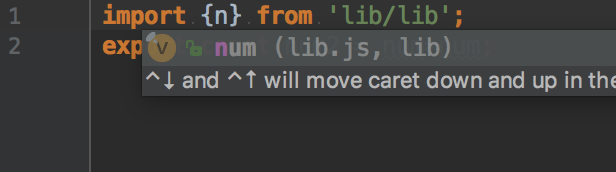
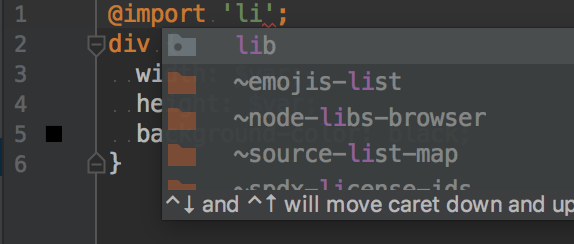
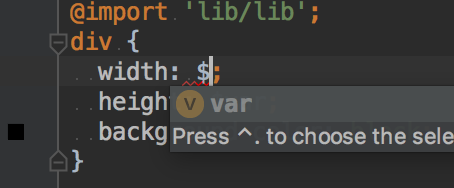

상대경로 헬파티

/app/src/lib/lib.js에는 아래와 같은 변수가 들어가있다.
/app/src/lib/lib.scss에는 아래와 같은 변수가 들어가있다.
이제 이 변수를 사용하는 모듈이 /app/src/a/b/c/d/e/f 폴더 안에 있는 녀석들이다.
/app/src/a/b/c/d/e/f/a.js 파일의 내용은 아래와 같다.
/app/src/a/b/c/d/e/f/a.scss 파일의 내용은 아래와 같다.
자동 완성이 되는 IDE의 경우에는 다행이지만… 그렇지 않은 에디터를 사용하는 경우에는 헬파티가 열리게 된다.
오늘은 이러한 문제점을 해결해보고자 한다!
프로젝트 세팅

일단 프로젝트로 쓸 디렉토리를 아무거나 만들고 터미널로 해당 디렉토리로 이동 후 다음 명령어를 쳐서 npm을 초기화 시키고 패키지들을 설치하자.
- 웹팩 2에서는 바벨 없이도 import/export 문법을 쓸 수 있게 됐다!
- html-webpack-plugin
빌드한 후에 소스 디렉토리에 있는 html 파일을 dist 디렉토리로 옮기기 위해 사용.
script, css 파일 자동 삽입 및 템플릿 엔진 사용, html minify 등등 다양한 기능 제공. - style-loader css-loader
css 파일을 모듈로써 사용하기 위해 사용. - node-sass sass-loader
sass, scss 파일을 모듈로써 사용하기 위해 사용.
프로젝트 디렉토리에 웹팩 설정 파일인 webpack.config.js 파일을 만들고 아래와 같이 적어주자.
웹팩 1은 Configuration - Webpack 링크를 참조하자.
/app/src/lib/lib.js은 아래와 같이 만들어주자.
/app/src/lib/lib.scss도 아래와 같이 만들어주자.
이제 /app/src/a/b/c/d/e/f/a.js를 아래와 같이 만들어주자.
상대 경로의 헬파티로부터 벗어나게 된다.
/app/src/a/b/c/d/e/f/a.scss도 아래와 같이 만들어주자.
역시 상대 경로의 헬파티로부터 벗어나게 된다.
/app/src/index.js는 아래와 같이 만들어주자.
/app/src/index.html은 아래와 같이 만들어주자.
번들 된 js 경로를 입력하지 않아도 html-webpack-plugin이 알아서 삽입해준다.
package.json에 빌드 스크립트를 넣어주자.
scripts 부분에 넣어주면 된다.
그리고 다음과 같이 빌드를 해보자.
그리고 나서 /app/dist/index.html을 열어보면 다음과 같이 원하는 결과를 얻을 수 있다.

100x100의 까만 div와 2*2=4의 결과를 콘솔창에서 볼 수 있다.
갓텔리제이 짱짱맨

한 가지 아쉬운 점이라면 IDE는 웹팩에서 정해준 루트 경로를 이해하지 못한다.
따라서 자동완성과 인덱싱(폴더가 존재하는 경로나 파일로 이동)을 지원하지 않는다.

아마 Jet Brains의 IDE(Webstorm, PHPStorm 등등)에서는 다 지원될 것이다.
최신 버전으로 업데이트 한 후에 /app/src 경로를 Resource Root로 지정해주자.
Source Root로 지정하면 sass에서 모듈을 인덱싱하지 못한다.





경로, 변수 자동 완성 및 인덱싱까지 너무 잘 돼서 개발자에게 뽀뽀 해주고 싶은 심정이다.
다른 IDE는 어떤지 모르겠지만 역시 갓텔리제이라 할만하다.